graph TD
A["📊 Dados Originais
(muitas dimensões)"] -->|"PCA"| B["🔮 Dimensões Reduzidas
(2-3D)"]
B --> C["📈 Visualização clara"]
style A fill:#44475a,color:#f8f8f2
style B fill:#bd93f9,color:#f8f8f2
style C fill:#50fa7b,color:#282a36
Da maldição da dimensionalidade à clareza
⏱️ Duração: ~70 minutos
Cenário: Você tem 100 features (dimensões) para prever uma variável-alvo.
Problema: quanto mais dimensões, mais dados precisamos!
Imagine: Uma imagem com 784 pixels (28×28) — como uma imagem do MNIST.
Sem PCA: 784 valores por pixel
⬛⬛⬛⬛⬛⬛⬛⬛
⬛⬛⬛⬛⬛⬛⬛⬛
... (784 valores)
Com PCA (50 componentes): Muito menos informação!
50 valores + componentes principais
Resultado: 95% da variância preservada com ~94% menos dados!
Responda rapidamente (sem consulta):
Respostas na lousa! 👍
Definição: Técnica não-supervisionada que encontra novas direções (componentes) que maximizam a variância.
graph LR
A["Dados Originais
(2D)"] -->|"Encontrar
direção"| B["PC1
(máxima variância)"]
B --> C["PC2
(ortogonal)"]
style A fill:#44475a,color:#f8f8f2
style B fill:#ffb86c,color:#282a36
style C fill:#8be9fd,color:#282a36
Analogia: Imagine uma foto de frente de um rosto.
Respostas no roteiro do professor! 📋
Covariância, autovetores e decomposição espectral
⏱️ Duração: ~45 minutos
Definição: Cov(X) = E[(X - μ)(X - μ)ᵀ]
Onde X é a matriz de dados, μ é o vetor de médias
Cov = | Var(X₁) Cov(X₁,X₂) |
| Cov(X₂,X₁) Var(X₂) |
NumPy: np.cov(X.T) ou (Xc.T @ Xc) / (n-1)
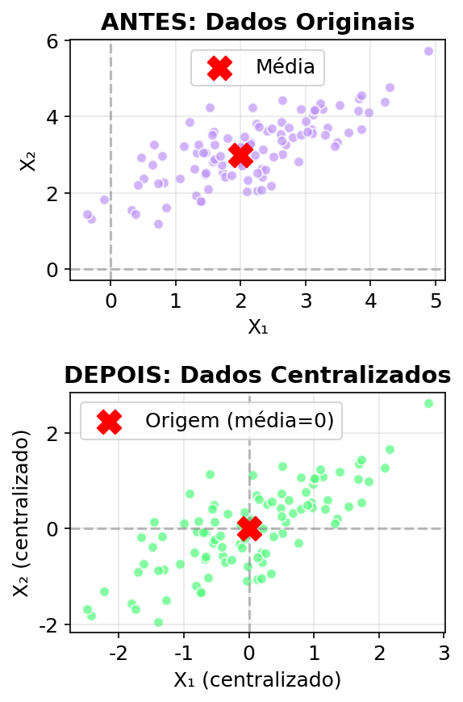
Definição: Av = λv
Onde A é a matriz de covariância, λ é autovalor, v é autovetor
Propriedade: Autovetores de Cov são as direções principais!
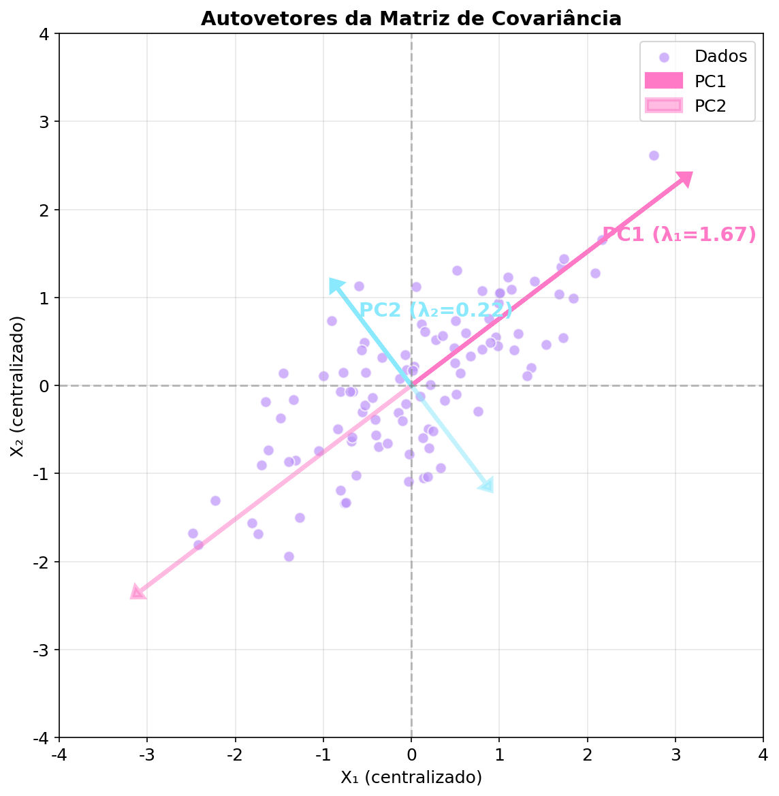
Fórmula: Cov = Q Λ Qᵀ
Q = Autovetores
(matriz ortogonal)
Λ = Autovalores
(matriz diagonal)
Qᵀ = Transposta
(inversa de Q)
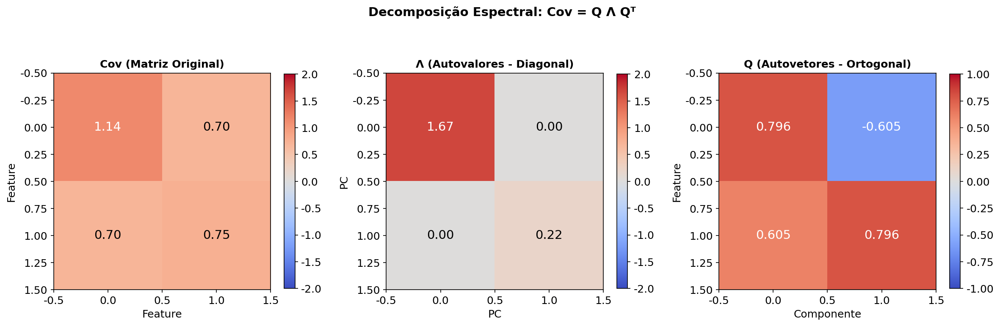
Resultado: PC1 (maior λ) explica a maior parte da variância!
Variância Explicada: λᵢ / Σλⱼ
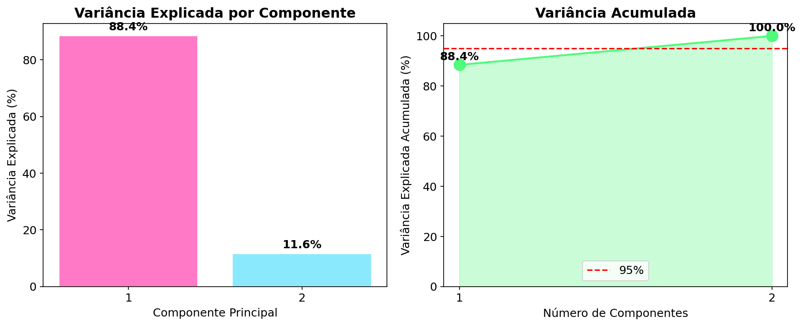
Singularidade, pseudoinversa e regularização
Condição: det(Cov) ≠ 0 (determinante não-zero)
⚠️ Caveat: Matrizes quase-singulares são numericamente instáveis!
Funciona mesmo quando det=0
Stabiliza computação, levemente alterando autovetores
Implementando do zero e com scikit-learn
⏱️ Duração: ~40 minutos
Passo a passo da implementação do zero
Dataset: Wine (sklearn)
Cada loading indica quanto cada feature contribui para o componente
Pergunta: Por que precisamos padronizar antes do PCA?
Resposta: Features em escalas diferentes dominariam a variância!
05_pca_visualizacao_multivariada.ipynbDica: Use shift + Enter para executar células
Além de reduzir dimensões: três aplicações principais
👁️
Separabilidade de Classes
"Posso ver as classes separadas?"
🔍
Relevância das Variáveis
"Quais variáveis importam mais?"
🎯
Modelo como Entrada
"Reduzir para treinar modelo"
⏱️ Duração: ~20 minutos
Reduzir para 2D/3D e colorir por classe para VER estrutura
PC2
↑
│ ┌─┐
│ ╱ ╲
│╱ 🍷 ╲
│ 🍷🍷 ╲ ← Classes separadas
│ ╲ ╲ no espaço PCA!
│
┼────┼────→ PC1
⚠️ Lembrete: PCA não usa labels para fazer a redução — apenas revela estrutura
Os autovetores revelam a contribuição de cada variável
Resultado:
alcohol ████████████████████
malic_acid █████████
ash ██
alcalinity_of_ash ████
magnesium ████
total_phenols ████████████████
flavanoids ████████████████████
...
Combina scatter plot (scores) com setas (loadings)
Como interpretar setas:
━━━━━━━━━━━━━━━━━━━━━━━━━━━━━━━━
• Seta longa → variável importante
• Mesma direção → variáveis correlacionadas
• Direções opostas → correlação negativa
• Ângulo ≈ correlação entre variáveis
━━━━━━━━━━━━━━━━━━━━━━━━━━━━━━━━
PC2
↑
╱ ╲
↖│ ↗
╱ └────┘ ╲
┼───┼──→ PC1
↑
Seta = loading
(tamanho = importância)
Reduzir dimensionalidade ANTES de treinar modelo de ML
FLUXO:
┌────────────┐ fit() ┌────────────┐ predict ┌────────────┐
│ Dados X │ ─────────────── │ Transformado │ ──────────│ Modelo │
│ (30 dims) │ no treino │ (10 dims) │ │ (ex: LR) │
└────────────┘ └────────────┘ └────────────┘
│
│ transform (NÃO fit!)
▼
┌────────────┐
│ Novas │ ← reutiliza componentes
│ Predições │ do treino!
└────────────┘
💡 Dica: Salvar o PCA com joblib.dump(pca, 'pca_modelo.joblib') e carregar com joblib.load()
| Uso | Quando Usar | Resultado | sklearn |
|---|---|---|---|
| 👁️ Visualizar | Explorar dados antes de modelar | Scatter 2D colorido | fit_transform() |
| 🔍 Interpretação | Entender variáveis importantes | Matriz de loadings | pca.components_ |
| 🎯 Pré-proc | Treinar modelo mais rápido | Dados reduzidos + score | fit() no treinotransform() no teste |
Depende da sua pergunta → resultado diferente
"Posso ver as classes separadas?"
→ Use PCA para visualizar separabilidade
"Quais variáveis são mais importantes?"
→ Analise os loadings (autovetores)
"Quero usar como entrada de modelo"
→ PCA como pré-processamento, fixe componentes
💡 Key Insight: O mesmo método + mesmo dataset → respostas diferentes dependendo de como você usa os componentes!
Transformando dados de alta dimensionalidade em gráficos 2D
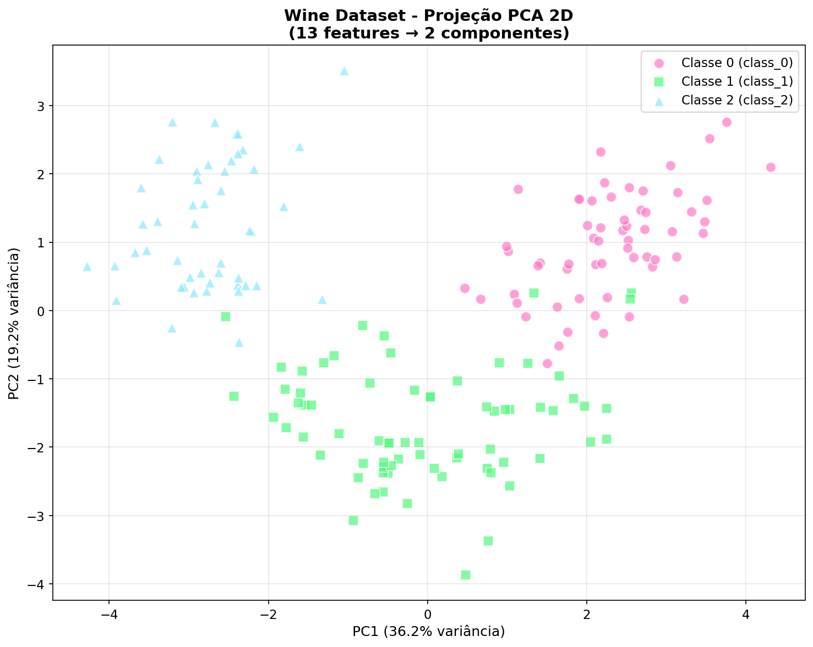
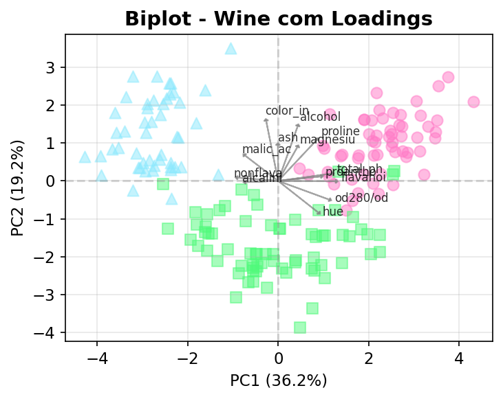
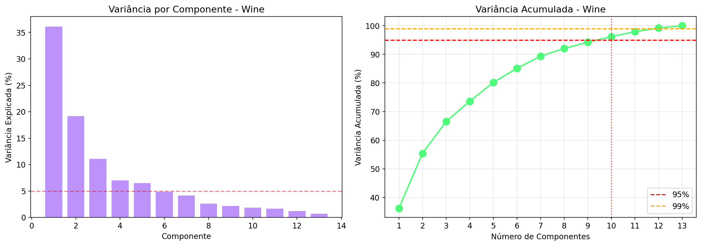
Uma prévia da aula de Deep Learning
Embedding: Representação numérica de uma imagem/rostro como um vetor de números
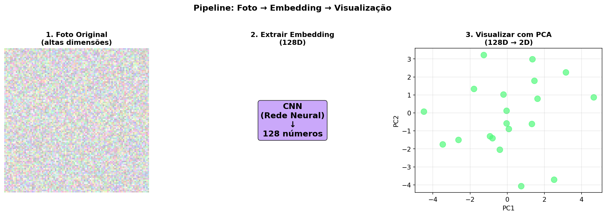
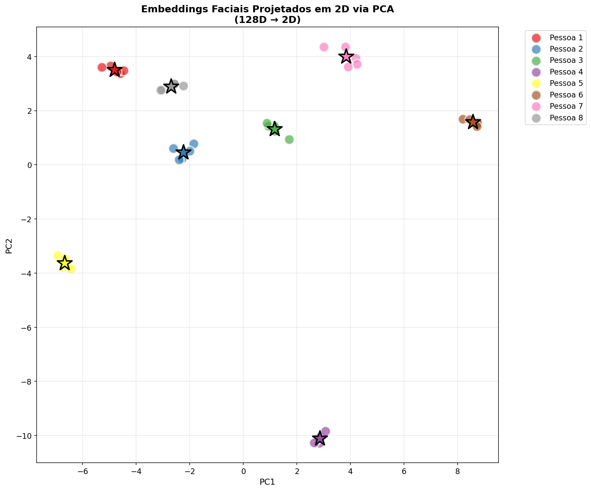
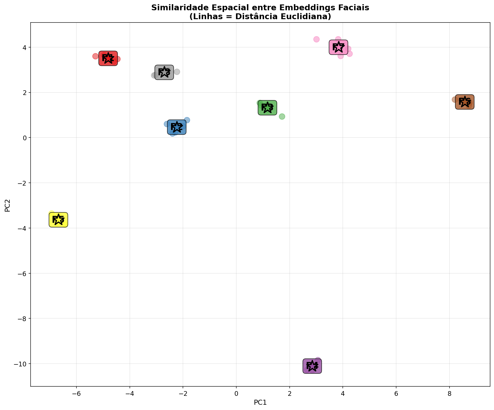
Hoje: simulamos embeddings para entender o conceito
Na aula de DL: CNNs geram embeddings reais!
Quando o PCA falha
💡 Solução: Para dados não-lineares, use t-SNE, UMAP ou Kernel PCA
Quando PCA não é suficiente
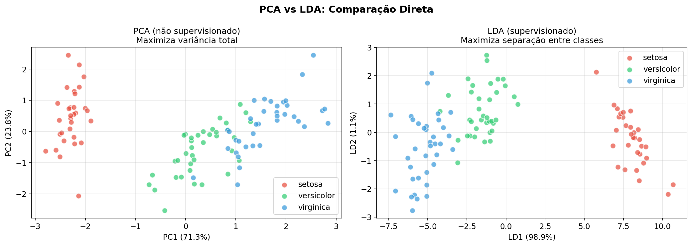
| Técnica | Quando usar | Exemplo |
|---|---|---|
| t-SNE | Visualização 2D/3D | MNIST, single-cell |
| UMAP | Mais rápido que t-SNE | Genômica, imagens |
| Kernel PCA | Redução com kernel RBF | Padrões circulares |
Regra: Comece com PCA linear. Se não funcionar, experimente não-lineares.
Termos técnicos e como evitá-los
Centralizar
Subtrair a média (mover dados para origem)
Padronizar
Centralizar + dividir pelo desvio (média=0, dp=1)
Autovetor
Vetor que não muda de direção após transformação
Autovalor
Escala do autovetor após transformação
Variância explicada
Quanto cada componente explica da variância total
Overfitting
Modelo que memoriza ruído em vez de aprender padrão
💡 Lembre: Centralizar = média 0, dp original | Padronizar = média 0, dp 1
Move os dados para a origem
Mesma escala para todas as features
Resumo e próximos passos
Regra prática:
Sempre padronize antes do PCA!
Escolha componentes para 80-95% da variância
🌐 Interativo: PCA Visualization
Topic: Clustering (K-means, Hierarchical)
Aprenderemos a agrupar dados sem labels!
Vamos discutir!
Slides disponíveis no repositório do curso
Ciência de Dados - IFSP Capivari